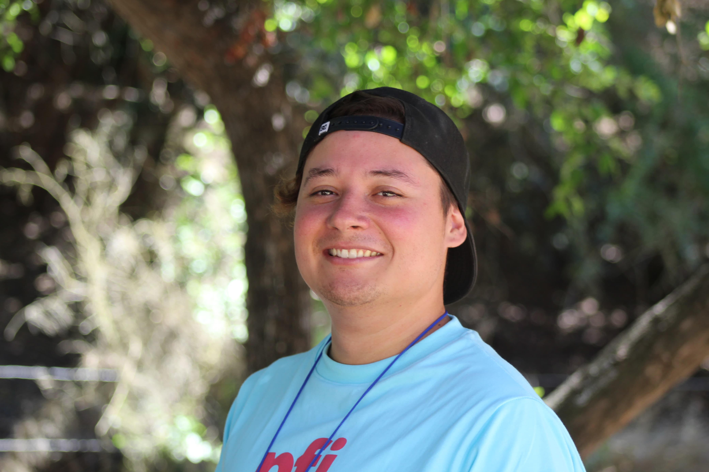

Tomas Contreras | WDD 130
Hi, I'm Tom and I am from Chile. I'm 25 years old and I'm very very motivated to complete this course. I lived in two countries United States and Chile, my favourite food is lasagna and pizza, I love extreme sports, I had the opportunity to practice Skateboarding and Snowboard. I can speak two languages spanish and english and I hope someday learn French and German.
- Timpanogos Temple
- Manhattan New York Temple
- Deseret Peak Utah Temple